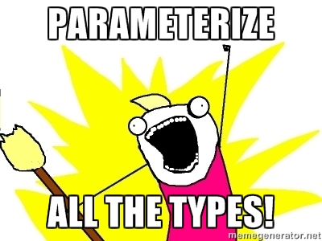

Problemas de los arrays
- Contravariantes en asignación
- Covariantes en los elementos
- Motivaciones históricas anteriores a los genéricos
Para poder hacer funciones que trabajaran genéricamente sobre los arrays cualquier tipo de array debía ser asignable a Object[]
public static boolean binarySearch(Object[] haystack, Object needle) {
// ... aquí magia
}
public static void main(String args[]) {
binarySearch({"a", "b", "c"}, "c"); //<-- Esto tenía que funcionar
}
Los arrays también deben permitir asignar subclases del tipo como elementos
Number[] numeros = new Number[3];
numeros[0] = 1;
numeros[1] = 1.1;
numeros[2] = 10l;
System.out.println(Arrays.toString(numeros));
Lo que nos lleva a la siguiente situación... que compila perfectamente
pero que falla en Runtime!!
String[] strings = {"a", "b", "c"};
Object[] objects = strings;
objects[2] = 10; // !!!
Para conseguir este comportamiento los arrays en java llevan un tag en runtime con el tipo que contienen para conseguir que funcionen, ya que en tiempo de compilación no se puede garantizar el funcionamiento
Pero ahora tenemos...
Generics!!!

Así que ahora podemos usar genéricos para parametrizar nuestra función anterior
public static <T> boolean binarySearch(T[] haystack, T needle) {
//Put the magic here...
}
pero...
¿Esto va a funcionar?
No
No sirve para nada en realidad
Al menos sin hacer alguna cosa más
Esto funciona porque los contenedores genéricos en Java no son variantes
Parece ser el motivo de que Class<?> se hiciera parametrizable, servir de puente
para que compilador y runtime pudieran funcionar de forma segura
public static <T> boolean binarySearch(
Class<T> klazz, T[] haystack, T needle) {
//Put the magic here...
}
También podemos conseguir el mismo efecto si nuestros métodos forman parte de una clase parametrizada
pero claro... tenemos que instanciarla
public class Searcher[T] {
public boolean binarySearch(T[] haystack, T needle) {
// The code here
}
public static void main(String args[]) {
new Searcher<String>().binarySearch({"a", "b"}, "c");
}
}
public void store(Map m, String key, Object value) {
if (value instanceof Number) {
value = String.valueOf(value);
}
else if (value instanceof Boolean) {
value = String.valueOf(value);
}
m.put(key, value);
}
public void store(Map m, String key, Number value) {
m.put(key, String.valueOf(value));
}
public void store(Map m, String key, Boolean value) {
m.put(key, String.valueOf(value));
}
public void store(Map m, String key, Object value) {
m.put(key, value);
}
public static void main(String[] args) {
List<Object> l = new ArrayList<Object>();
l.add(2);
l.add(true);
l.add("hola mundo");
for (Object object : l) {
print(object);
}
}
- En java la resolución de los métodos en función de los parámetros se hace en tiempo de compilación
- Sólo se comprueba en runtime el tipo del objeto this
- Se conoce como single dispatch
- Java, C++, C# (< 4.0 aparentemente) y Smalltalk, entre otros, tienen single dispatch
Patrón visitor
- Es una manera de hacer double dispath
- Para implementarlo correctamente es necesario que todas las clases visitables implementen el método accept
- Esta es la única manera de usar siempre la implementación más concreta
Inicialización tardía de Singletons
public class Singleton {
}
public class Singleton {
private static Singleton instance = null;
private Singleton() {
}
public static Singleton getInstance() {
if (instance == null) {
instance = new Singleton();
}
return instance;
}
}
Lo malo es que esto no es multihilo
A partir de aquí se complica la cosa
Con esto serializamos el acceso aunque la instancia esté creada ya, lo que no es muy recomendable
synchronized public static Singleton getInstance() {
if (instance == null) {
instance = new Singleton();
}
return instance;
}
public static Singleton getInstance() {
if (instance == null) {
synchronized(Singleton.class) {
instance = new Singleton();
}
}
return instance;
}
public static Singleton getInstance() {
if (instance == null) {
synchronized(this) {
if (instance == null) {
instance = new Singleton();
}
}
}
return instance;
}
private static volatile Singleton instance;
public static Singleton getInstance() {
if (instance == null) {
synchronized(this) {
if (instance == null) {
instance = new Singleton();
}
}
}
return instance;
}
Initialization on demand holder
public class Singleton {
private Singleton() {}
private static class LazyHolder {
private static final Singleton INSTANCE = new Singleton();
}
public static Singleton getInstance() {
return LazyHolder.INSTANCE;
}
}
- El código es mucho más conciso
- Es threadsafe
- Es lazy
- La principal pega es que no se pueden controlar errores en la inicialización apropiadamente